The trail
C's dotted path runs down the left side of the page. Instead of a fixed dot per section, one dot rides it. It starts beside the hero eyebrow, eases to about 40% of the screen as you begin to scroll, then follows you down. The path fills in behind it like a progress bar, and the dot, the filled path and each stop take the color of the section you are in. It lands on the Follow along eyebrow. On phones the path slims down and stays on.
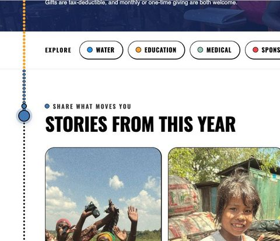
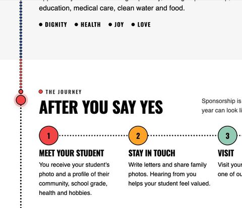
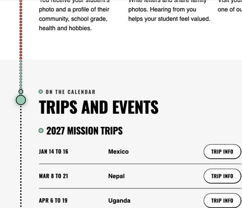
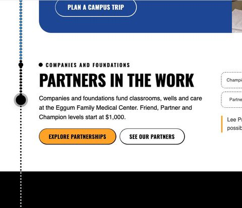
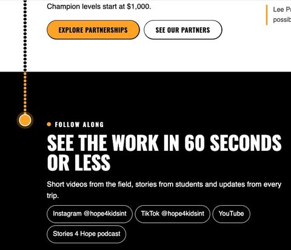
- Hero and Follow along
- Stories
- Who we are
- After you say yes
- Trips and events
- Campus
- Partners
Colors follow the program pills and the section color convention (red sponsorship, green trips and medical, water blue, black projects). The motion is a slow follow with no bounce, and it holds still for visitors who turn on reduced motion.
- The bet
- Faces and short proof come first, then the 20 second explainer, then how sponsorship feels, then every way to go, host or partner. Closest to round 2 A.
- Hero
- Full width Fairmont classroom photo, copy left over B's navy gradient and speckle. Cover boarding for $132/month, or give to the Pathways to Purpose Education Fund.
- Order
- CHeader with "I want to..."
- BHero, now full width
- AExplore bar
- AStories from this year
- BWho we are, in 20 seconds
- CAfter you say yes
- BTrips and events
- ABring your campus to Uganda
- APartners in the work
- AFollow along and footer
- Ending
- White partners section, then the black Follow along band and footer.


Mockup A revised from Travis's notes. Same sections, order, copy and trail. The phone layout is now the starting point for every section, and the menu changes below apply at every screen size.
- About
- No longer a lone link beside the menu. It is the seventh "I want to..." intent, Learn about H4KI: our story, our faith, programs, team and board, financials, FAQ, the podcast and contact.
- Sign in
- A Sign in control in the header at every size (an icon on phones) opens two choices: the Giving account (the Givecloud donor portal, give.h4ki.org/account/login) and the Sponsor portal for letters (letter.h4ki.org). It also sits in the phone menu, the Sponsor panel and the footer.
- Phone menu
- See where we serve is a plain list of the 8 countries instead of a photo grid. All seven intents start closed so the whole menu fits one screen, and opening one closes the others.
- Mobile first
- The stylesheet starts from the phone and adds tablet and desktop layouts on top. On phones: Sponsor and Donate move to a bottom bar that appears after the hero; the headline sits over the photo so both hero buttons land in the first screen; the six program pills show as a grid; each trip date is one tappable row; Follow along shows the video before the links; footer link groups fold up. The phone page is about 14% shorter.
On a phone
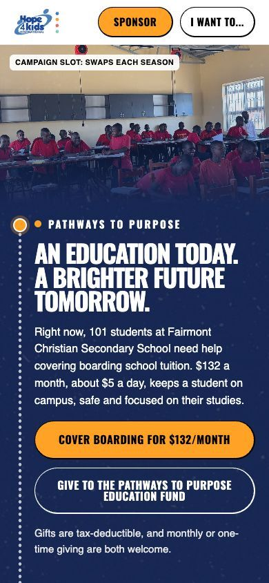
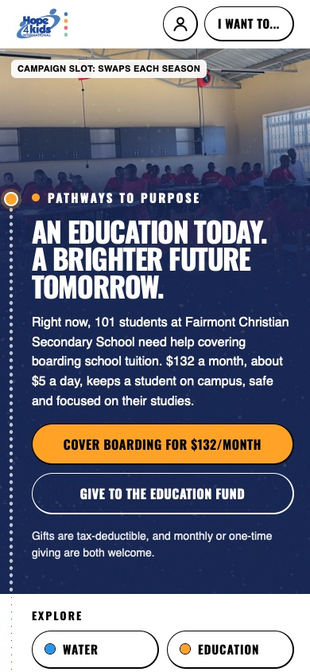
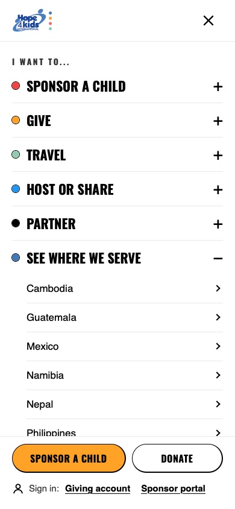
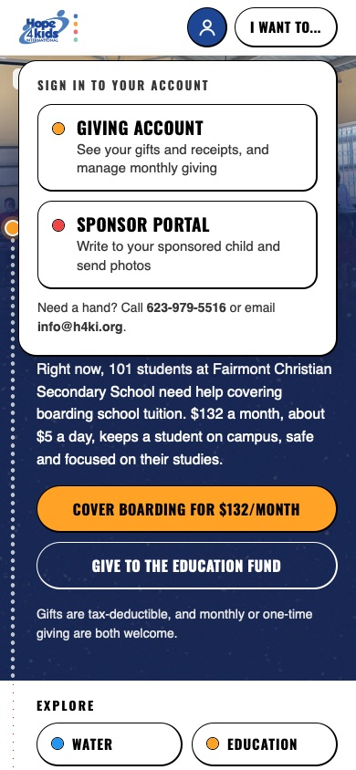
On a desktop
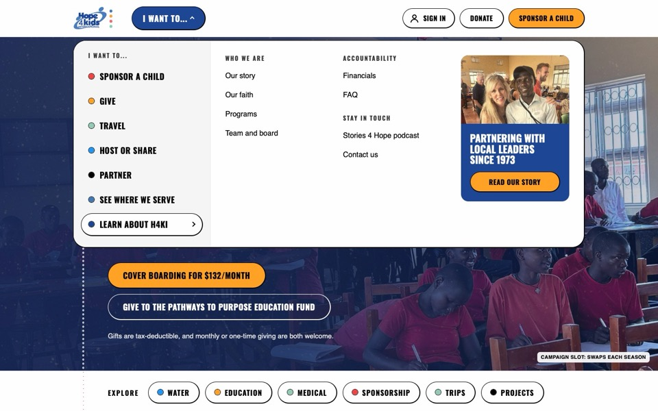
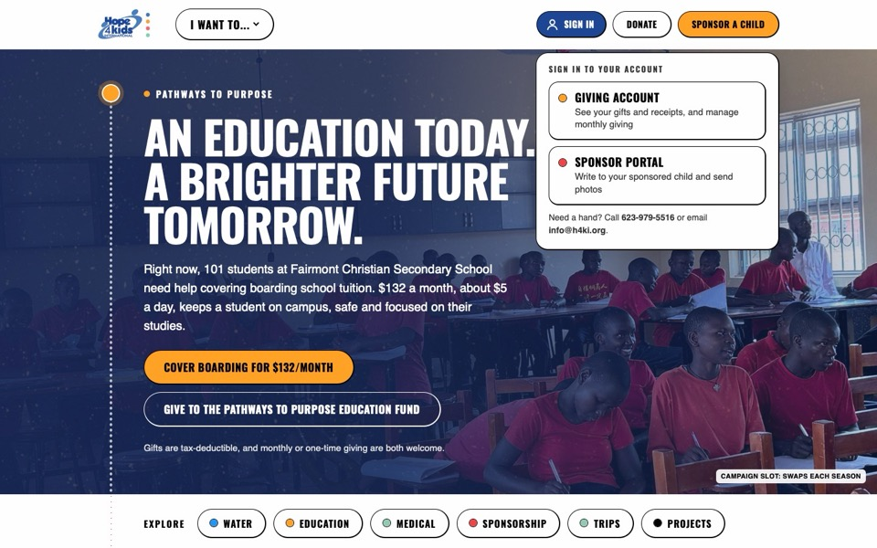


- The bet
- First-time visitors get who we are and what sponsorship feels like before anything else. Stories move to the end and open one black closing band with Follow along, so the page finishes on what to share and where to follow.
- Hero
- Full width photo of Fairmont students laughing, copy anchored low with A's floating count chip (101 students). Leads with the UNICEF line from the approved Pathways email.
- Order
- CHeader with "I want to..."
- BHero, full width, with A chip
- AExplore bar
- BWho we are, in 20 seconds
- CAfter you say yes, plus a two way start
- BTrips and events
- ABring your campus to Uganda
- APartners in the work
- AStories from this year, on black
- AFollow along and footer
- Ending
- Stories, Follow along and the footer share one black band, so the trail finishes in the dark with white dots and an orange landing.


Where each piece came from
| Piece | From | What changed in round 3 |
|---|---|---|
| Header and "I want to..." menu | C with A and B panels | Intents became vertical tabs so A's sponsor panel and B's country tiles both fit inside one menu. |
| Hero | B | Full width instead of a rounded card. B adds A's count chip. |
| Explore bar | A | Unchanged, set into the trail's lane. |
| Stories rail | A | Brian's real photo replaces the placeholder. Black version in B. |
| Who we are and facts | B | Facts stack into rows on phones so "Since 1973" never squeezes. |
| After you say yes | C | B adds a two way start: sponsor a child or cover boarding. |
| Trips and events | B | The Oct 25 Orange County walk has passed, so the walk column holds the next date from the Events list. |
| Campus and partners | A | Unchanged. |
| Follow along and footer | A | Unchanged. The trail lands on Follow along. |
| Traveling dot | New on C's path | One dot that follows the reader and fills the path behind it, replacing C's fixed nodes. |
Updates and open items
Updated since round 2
- Boarding is now $132 a month, about $5 a day, per the final Pathways email (Oct 21). Round 2 showed $93.
- Button wording follows that email: "Cover boarding" for the $132 ask, since some students need both a sponsor and boarding support.
- Brian's photo is in the stories rail, with the line from the email: Fairmont's very first graduating class, now training to run heavy machinery.
- The past Oct 25 walk is gone. The live homepage listed no upcoming walk on Oct 29.
- Nov 4: A2 adds Sign in, moves About into the menu, lists countries in the phone menu and rebuilds the layout phone first.
Still open
- The next Walk 4 Water date from the Events list.
- The live sponsorship page still showed $93 on Oct 29; it should match $132 before the homepage points to it.
- University and partner logos (space held), plus video poster files for the walk promo and the Namibia video.
- "Gifts are tax-deductible" in the hero needs a check from H4KI leadership before launch.
- Sign in: whether the Giving account and the Sponsor portal will ever share one sign in, and a check that the Giving account line matches what the Givecloud portal shows.
- Elementor build: everything is native except the trail, which needs one small Custom Code snippet. The fallback is C's fixed dotted line with a node per section.
Build notes. Header: Menu widget with one mega dropdown holding a Nested Tabs widget set to vertical (click works natively; switching on hover takes a few lines of code). Hero: full width container with background image, overlay and speckle, saved as a seasonal template. Stories: Loop Carousel. Trips: Loop Grid from the Events list with automatic expiry. Trail: one Custom Code snippet plus a color attribute on each section container.
Tax language is for informational purposes only and does not constitute legal or financial advice. Consult a qualified professional.